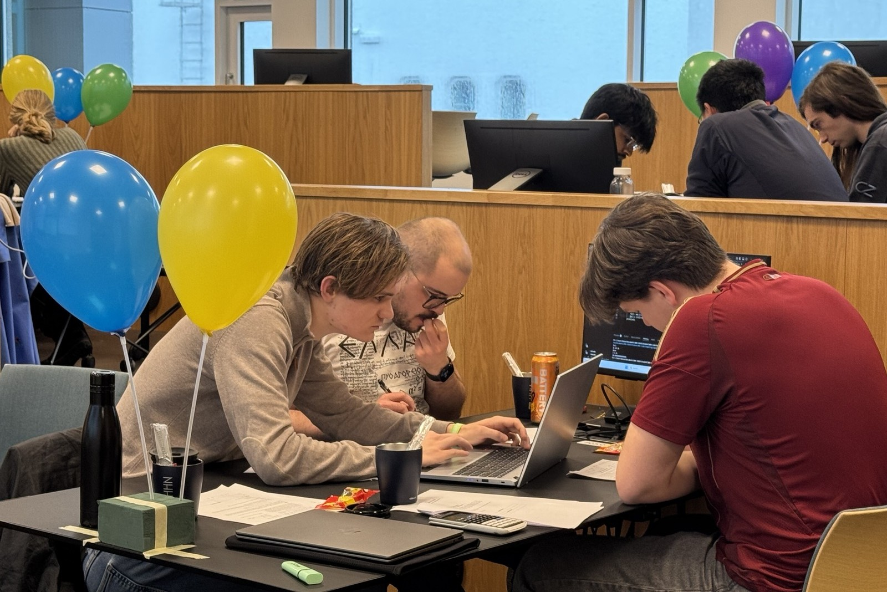
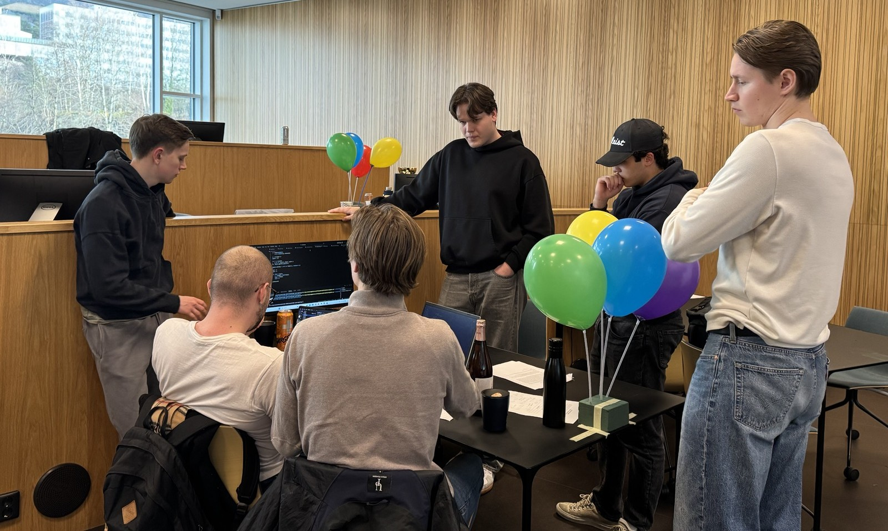

On March 14, NTNU's annual programming competition
IDI Open
took place.
NHH was one of the satellite hosts, alongside the University of Oslo, the IT University of Copenhagen,
and Århus University.
All teams competed on a global unified leaderboard,
trying to solve as many challenging algorithmic coding problems as possible within five hours.
The
NHH Coders,
consisting of two first-year BEDS students and one MØA student, came in
18th out of 48 active teams.
This is a considerable success, especially given that most of the remaining teams came from
computer science institutes, including Master- and sometimes PhD-students.

The event is held in the same style as the
NCPC,
the first round of the
largest and most prestigious programming contest in the world.
With NCPC happening in the fall each year,
IDI open gives students a nice opportunity to keep the competition spirit alive in the off-season.
These competitions provide the students with an arena where they can develop their skills in
programming and problem solving, as well as
team work,
and to connect with other like-minded people from different institutions.
{kind=link}
{kind=link}
{kind=link}